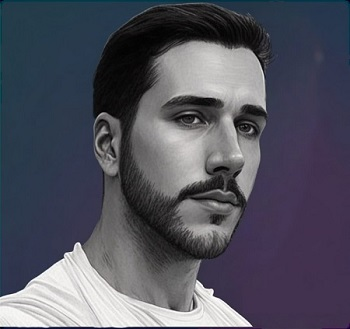

Jeanfranco Fernandes Junior
Hello and welcome to my portfolio! I'm a graphic designer specializing in creating logos and visual identities for companies and businesses. With a passion for visual aesthetics and an innovative mindset, I'm here to take your brand to the next level.
Imagine a visual identity that captures the essence of your company, conveying your vision and values in a unique way. By relying on my design expertise and skills, I can create standout logos that leave a lasting impression. Every element is carefully crafted to deliver a clear message and establish an instant connection with your target audience.
But my work goes beyond just logos. I have experience in visual interface design for websites and applications, ensuring an engaging and intuitive user experience. Every detail is meticulously considered to create a cohesive, attractive, and functional design, providing a seamless and memorable interaction for your users.
And when it comes to bringing your ideas to life, I'm ready to push the boundaries. My passion for creation extends to 3D modeling and sculpture, allowing me to transform concepts into tangible reality. Whether it's designing products, creating prototypes, or offering stunning visual perspectives, my 3D modeling and sculpture skills will add a new dimension to your project.
I'm committed to providing you with personalized service and meeting your specific needs. By working closely together, I'll dedicate time and effort to understand your goals and transform them into visually impactful results.
If you're ready to elevate your brand, website, application, or project to the next level, please don't hesitate to get in touch with me to discuss your ideas and embark on this creative journey together. I'm excited to collaborate and bring the vision you imagine to reality.
Let me help you create a successful brand. Your story deserves to be told in a captivating and memorable way.